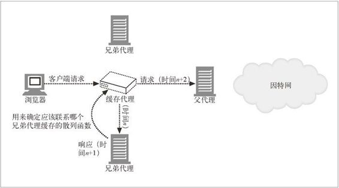

20.8 缓存阵列路由协议
代理服务器通过拦截来自单个用户的请求，提供所请求 Web 对象的缓存副本，极大地降低了发往因特网的流量。但随着用户数的增加，大量流量可能会使代理服务器自身超载。
对此问题的一种解决方案就是使用多个代理服务器将负载分散到一组服务器上。CARP（缓存阵列路由协议）是微软公司和网景公司提出的一个标准，通过这个协 议来管理一组代理服务器，使这组代理服务器对用户来说就像一个逻辑缓存一样。
CARP 是 ICP 的一个替代品。CARP 和 ICP 都允许管理者通过使用多个代理服务器来提高性能。本节讨论了 CARP 与 ICP 的区别，用 CARP 代替 ICP 的优缺点以及 CARP 协议实现上的一些技术细节。
ICP 中出现缓存未命中时，代理服务器会用 ICP 报文格式来查询附近的缓存，以确定 Web 对象是否存在。附近的缓存会以 HIT 或 MISS 进行响应，请求代理服务器会用这些响应来选择能够获取到对象的最适当的位置。如果 ICP 代理服务器是以层次结构排列的，未命中的查询会被提交给其父代理。图 20-13 以图形方式显示了如何通过 ICP 来解决命中和未命中的问题。
图 20-13 ICP 查询
注意，通过 ICP 协议连接起来的每个代理服务器都是将内容进行了冗余镜像的独立缓存服务器，这就说明在不同的代理服务器之间复制 Web 对象条目是可行的。相反，用 CARP 连接起来的一组服务器会被当作一个大型的服务器，其中每个组件服务器都只包含全部缓存文档中的一部分。通过对某个 Web 对象的 URL 应用散列函数，CARP 就可以将此对象映射到特定的代理服务器上去。每个 Web 对象都有一个唯一的家，所以我们可以通过单次查找确定对象的位置，而无须去查询集合中配置的每个代理服务器。图 20-14 总结了 CARP 重定向的方式。

图 20-14 CARP 重定向
如图 20-14 所示，作为客户端和代理服务器中间人的缓存代理可以在各个代理服务器之间分配负载，但这项功能也可以由客户端自身提供。可以配置 Internet Explorer 和网景公司的 Navigator 这样的商用浏览器，以插件的形式计算散列函数，来确定应该把请求发送给哪个代理服务器。
CARP 对代理服务器做出的确定性解析说明它无须向所有邻居发送查询，这也就意味着这种方法所需发送的缓存间报文会比较少。随着越来越多的代理服务器添加到配置系统中来，缓存系统集群的规模会变得相当大。但 CARP 的一个缺点就是，如果某个代理服务器不可用了，就要重新修改散列表以反映这种变化，而且必须重新配置现存代理服务器上的内容。如果代理服务器经常崩溃的话，这么做的开销可能会很高。相反，ICP 代理服务器中存在的冗余内容就表示它不需要重新配置。另一个潜在的问题是，由于 CARP 是个新协议，CARP 集群中可能不会包含那些现存的、只运行 ICP 协议的代理服务器。
介绍了 CARP 和 ICP 间的区别之后，我们来详述一下 CARP。CARP 重定向方法要完成下列任务。
保存一个参与 CARP 的代理服务器列表。周期性地查询这些代理服务器，看看它们是否仍然活跃。
为每个参与的代理服务器计算一个散列函数。散列函数的返回值要考虑此代理所能处理的负载量。
定义一个独立的散列函数，这个函数会根据所请求 Web 对象的 URL 返回一个数字。
将 URL 散列函数的结果代入代理服务器的散列函数，得到一个数字阵列。这些数字中的最大值决定了要为这个 URL 使用的代理服务器。由于算出来的值是确定的，所以对同一个 Web 对象的后继请求会被转发给同一台代理服务器。
以上 4 项任务可以由浏览器、插件执行，也可以在一个中间服务器上计算。
为每个代理服务器集群创建一个表，表中列出了集群中的所有服务器。表中的每个条目都应该包含全局参数的相关的信息，比如，负载因子、生存时间（TTL）、倒计数值和应该以何频率查询成员之类的全局参数。负载因子说明机器可以处理多少负载，这取决于那台机器的 CPU 速度和硬盘容量。可以通过 RPC 接口对此表进行远程维护。只要表中的字段被 RPC 修改了，就可以使其对下游的客户端和代理可见，或将其发布给它们。这项发布工作是在 HTTP 中进行的，这样，所有的客户端或代理服务器就都可以在不引入另一种代理间协议的基础上消化表格信息了。客户端和代理服务器只用了一个知名 URL 来获取这张表。
所使用的散列函数必须能够确保 Web 对象在参与的代理服务器间是统计分布的。应该用代理服务器的负载因子来确定分配给那台代理的 Web 对象的统计概率。
总之，CARP 协议允许将一组代理服务器看成单个的集群缓存，而不是（像 ICP 中那样的）一组相互合作但又相互独立的缓存服务器。确定的请求解析路径会在一跳内找到某个特定的 Web 对象的家。这样会降低 ICP 在一组代理服务器中查找 Web 对象时常会产生的代理间流量。CARP 还可以避免在不同的代理服务器上存储 Web 对象的多个副本的问题，这样做的优点是缓存系统集群的 Web 对象存储容量较大，缺点是任意一个代理的故障都要改写现存代理的部分缓存内容。